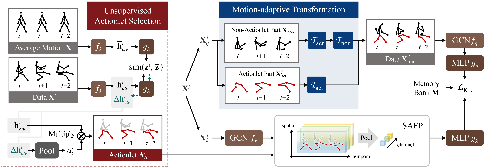

Actionlet-Dependent Contrastive Learning for Unsupervised Skeleton-Based Action Recognition
Abstract
The self-supervised pretraining paradigm has achieved great success in skeleton-based action recognition. However, these methods treat the motion and static parts equally, and lack an adaptive design for different parts, which has a negative impact on the accuracy of action recognition. To realize the adaptive action modeling of both parts, we propose an Actionlet-Dependent Contrastive Learning method (ActCLR). The actionlet, defined as the discriminative subset of the human skeleton, effectively decomposes motion regions for better action modeling. In detail, by contrasting with the static anchor without motion, we extract the motion region of the skeleton data, which serves as the actionlet, in an unsupervised manner. Then, centering on actionlet, a motion-adaptive data transformation method is built. Different data transformations are applied to actionlet and non-actionlet regions to introduce more diversity while maintaining their own characteristics. Meanwhile, we propose a semantic-aware feature pooling method to build feature representations among motion and static regions in a distinguished manner. Extensive experiments on NTU RGB+D and PKUMMD show that the proposed method achieves remarkable action recognition performance. More visualization and quantitative experiments demonstrate the effectiveness of our method.
Framework
The pipeline of actionlet-dependent contrastive learning. In unsupervised actionlet selection, we employ the difference from the average motion to obtain the region of motion. For contrastive learning, we employ two streams, i.e., the online stream and the offline stream. The above stream is the online stream, which is updated by gradient. The below is the offline stream, which is updated by momentum. We get the augmented data by performing motion-adaptive data transformation (MATS) on the input data with the obtained actionlet. In offline feature extraction, we employ semantic-aware feature pooling (SAFP) to obtain the accurate feature anchor. Finally, utilizing similarity mining, we increase the similarity between positives and decrease the similarity between negatives.
Results
Citation
@inproceedings{lin2023actionlet, author={Lin, Lilang and Zhang, Jiahang and Liu, Jiaying}, booktitle={Proceedings of the IEEE/CVF Conference on Computer Vision and Pattern Recognition (CVPR)}, title={Actionlet-Dependent Contrastive Learning for Unsupervised Skeleton-Based Action Recognition}, year={2023}, }
Reference
[1]. Lilang Lin, Sijie Song, Wenhan Yang, and Jiaying Liu. MS2L: Multi-task self-supervised learning for skeleton based action recognition. In ACM MM, 2020.
[2]. Sijie Song, Cuiling Lan, Junliang Xing, Wenjun Zeng, and Jiaying Liu. Spatio-temporal attention-based lstm networks for 3d action recognition and detection. IEEE TIP, 2018.
[3]. Jiaying Liu, Sijie Song, Chunhui Liu, Yanghao Li, and Yueyu Hu. A benchmark dataset and comparison study for multi-modal human action analytics. ACM TOMM, 2020.